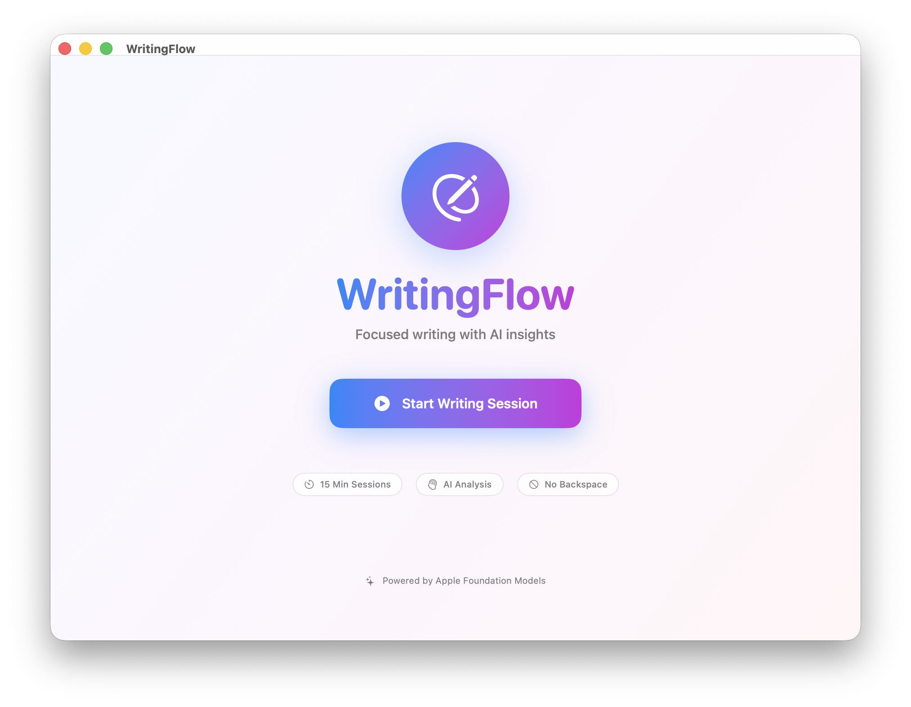

Dein fokussierter Schreibbegleiter
Du schreibst in 15-Minuten-Sessions und bekommst danach eine KI-gestützte Zusammenfassung.

Warum WritingFlow anders ist
15-Minuten-Fokus-Sessions
Kurze Schreibblöcke, in denen die Rücktaste gesperrt ist. Du schreibst nur nach vorne.
KI-gestützte Zusammenfassungen
Apple Intelligence wertet deine Sessions aus: Wortzahl, Satzlänge, Stimmung und häufige Themen.
Intelligente Pausen
Automatische Timer-Pausen, wenn du aufhörst zu schreiben. Kein Druck, nur Fluss.
Session-Rewind
Review und Reflektion deiner abgeschlossenen Schreibsessions mit detaillierten Analytics.
Schreib-Analytics
Verfolge deine Fortschritte, Muster und Verbesserungen über Zeit mit detaillierten Statistiken.
100% Privat & Lokal
Alle Daten bleiben auf deinem Mac. KI-Verarbeitung on-device. Keine Cloud, keine Tracker.
Teste WritingFlow in der Beta
Teste jetzt die neuesten Features und beeinflusse die Entwicklung. Als Beta-Tester bekommst du exklusiven Zugang zu neuen Funktionen bevor sie veröffentlicht werden.
TestFlight Link